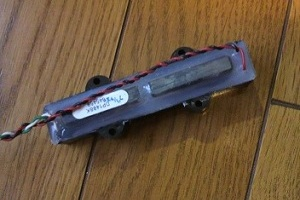
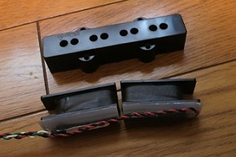
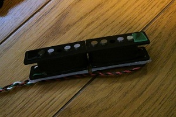
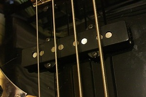

ジャズベース用ピックアップ DiMarzio Ultra Jazz（DP147、DP148、DP149）の改造
2013年03月04日 カテゴリー：ベース関係
ジャズベース用ピックアップはポールピースの高さを調整できるものが少ないですね。試しにポールピースをドリルで削ろうとしましたが、全然歯が立ちませんでした。ポールピースを薄く切った「スライス磁石」をくっつけるといったことをされている方もいらっしゃいますが、そういった加工はなかなか難しいです。
私が使っているジャズベースのピックアップDiMarzio Ultra Jazzは2つのコイルが入っているタイプです。これだとプレシジョンベース用ピックアップのように傾けて取り付けできるのではないかと思い改造してみました。

DiMarzio Ultra Jazzの裏側です。磁石が2つに分かれてついているのがわかります。
ピックアップカバー内には2つのコイルが入っていて、リアのみやフロントのみで使用した場合でもハムキャンセルでノイズを抑えられる構造になっています。

樹脂のようなもので固めてありますが、カッターで容易にはがすことができます。そして中の2つのコイルを取り出します。

端にプラスチック片を瞬間接着剤で貼り付けました。事前の計算の結果、1弦側が1.5mm、4弦側が1mmの厚さとなっています。これによりコイルが斜めになり、音量バランスが改善するというワケです。
斜めになると中央部分で2つのコイルのボビンが重なるため、少し削っておく必要があります。ピックアップカバーは瞬間接着剤で固定しました。

ベースに取り付けた様子です。ポールピースがへこんでいるように見えます。
他にもハムキャンセル構造を持ったピックアップであれば似たような改造ができるかもしれません。個人的にはこれでだいぶ快適に弾けるようになりました。